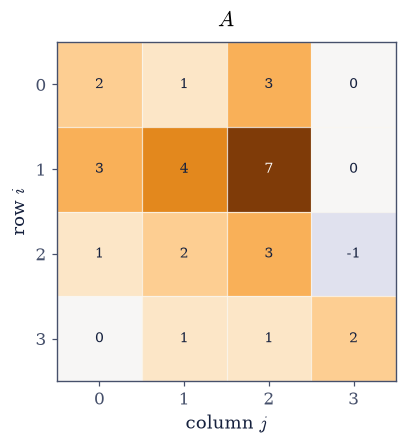
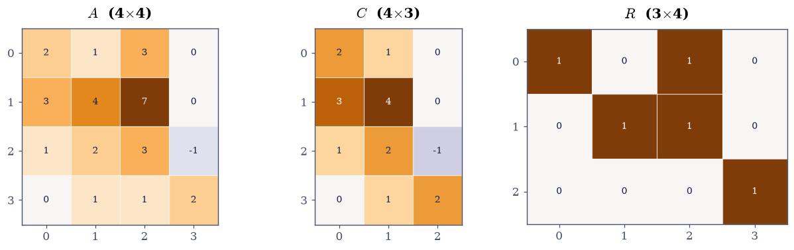
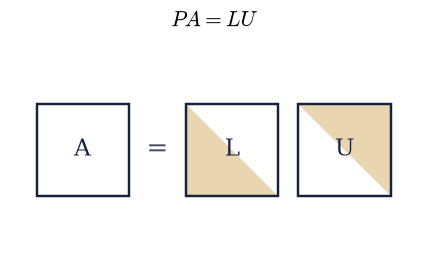
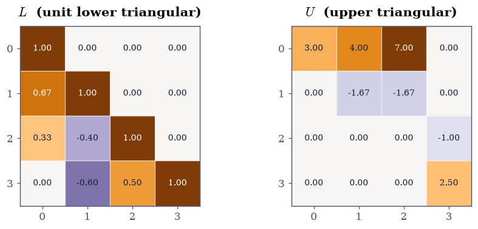
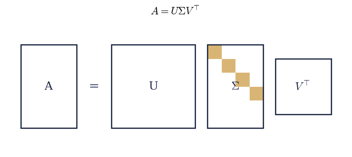
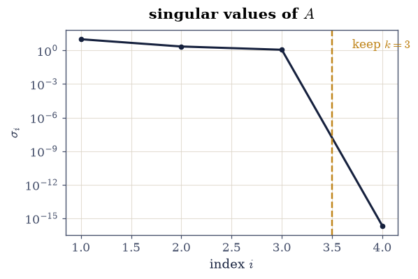
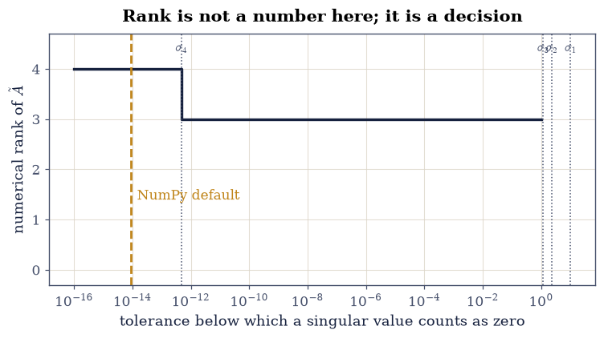

P The Course in Miniature: One Matrix, Five Factorizations#
Notebook overview#
This notebook is a tour, not a lesson. There is nothing here to implement: every cell is written for you, and the work is to run it, read what comes back, change a number, and run it again. The point is to meet the five factorizations that organise the whole course before we start earning any of them, and to leave with one question that will not go away.
We take a single \(4\times4\) matrix and factor it five ways. Each factorization is a different sentence about the same matrix, and each is the answer to a different question. Which columns are genuinely independent? How do we solve \(A\mathbf{x}=\mathbf{b}\)? How do we build an orthonormal basis for the column space? What does the matrix do to lengths and angles? And what is the closest simpler matrix to this one? By the end the five will look less like five techniques and more like five views of one object, which is the argument the Epilogue finally makes.
The tour ends somewhere uncomfortable. Our matrix has a column that is exactly the sum of two others, so its rank is three, and every method here agrees. Then we nudge every entry by \(10^{-12}\) and ask again. NumPy will tell us the rank is four. It is not wrong, and neither is the answer three. Sorting that out is what §0.2 exists for, and the tolerance it hands us is used in every notebook after it.
How to read a check. Most cells below end with a
validateline printing ✓ or ✗. A check compares a computed result against something the computation did not assume — an exact identity, a closed form, an independent method. A ✗ does not by itself mean an answer is wrong: it means the output did not match what the check expected, which may be a genuine error, a different-but-valid convention (a sign, a column order), or simply too tight a tolerance. Treat a ✗ as a prompt to locate the discrepancy, never as a verdict. A ✓ is strong evidence, not proof.
Theory in brief#
The matrix, and why this one#
Everything below is done to
Look at the columns rather than the rows. Writing \(\mathbf{a}_1,\dots,\mathbf{a}_4\) for them, the third is not new:
So of the four columns only three point in genuinely different directions, and the set of vectors \(A\) can produce — all combinations \(x_1\mathbf{a}_1 + \cdots + x_4\mathbf{a}_4\), which is exactly what \(A\mathbf{x}\) means — fills a three-dimensional slab of \(\mathbb{R}^4\) rather than all of it. That number three is the rank, and the matrix was chosen so that it is interesting: large enough to have structure, singular enough to break the naive tools, small enough to print.
The five factorizations#
Each of the following writes \(A\) as a product of factors with a special shape. The shapes are the content, so it is worth having them in one place:
Factorization |
Factors |
Answers |
|---|---|---|
\(A = CR\) |
\(C\): the independent columns; \(R\): how to rebuild the rest |
which columns are independent, and what the rank is |
\(PA = LU\) |
\(L\) unit lower triangular, \(U\) upper triangular, \(P\) a permutation |
how to solve \(A\mathbf{x} = \mathbf{b}\) |
\(A = QR\) |
\(Q\) orthonormal columns, \(R\) upper triangular |
how to build an orthonormal basis, and how to fit |
\(S = Q\Lambda Q^{\top}\) |
\(Q\) orthogonal, \(\Lambda\) diagonal (for symmetric \(S\)) |
what a symmetric matrix does in its own directions |
\(A = U\Sigma V^{\top}\) |
\(U, V\) orthogonal, \(\Sigma\) diagonal, nonnegative |
everything, for every matrix, with no hypotheses |
The first four each want something from the matrix: \(CR\) wants you to identify independence, \(LU\) wants the pivots not to vanish, \(QR\) wants columns to orthogonalise, and \(Q\Lambda Q^{\top}\) wants symmetry. The last one wants nothing. Every matrix has a singular value decomposition — rectangular, singular, complex, it does not matter — which is why it ends up carrying so much of the load in Chapter IV and everything after.
Two quantities to watch#
The singular values \(\sigma_1 \ge \sigma_2 \ge \cdots \ge 0\) are the diagonal of \(\Sigma\). They are the semi-axes of the ellipsoid that \(A\) makes out of the unit sphere, so they measure how much the matrix stretches in each of its own preferred directions. Two facts we will use immediately:
and the rank equals the number of nonzero \(\sigma_i\). That second fact is exactly true in exact arithmetic and is the source of all the trouble at the end of this notebook, because “nonzero” is not a decidable property of a floating-point number that came out of a computation.
Setup#
Data only: the one matrix of Eq. 1, in full view. Every factorization is performed in the exercises — this notebook asks the course’s question; the chapters answer it.
The Setup below holds this notebook’s data and instruments — nothing you are asked to build. It is collapsed so the building stays yours; expand it whenever you want the details.
A has shape (4, 4), dtype float64, and unit roundoff eps = 2.220e-16
Exercise 1: Look at the matrix before computing with it#
A matrix printed as sixteen numbers hides its structure; the same matrix drawn as a picture does not. Before any factorization, we look. The habit is worth forming now, because by Chapter V we will be looking at matrices with a million entries where the picture is the only thing a human can read.
The dependence we claimed in the theory section, \(\mathbf{a}_3 = \mathbf{a}_1 + \mathbf{a}_2\), is a statement about Eq. 1 that can be checked directly, and it is the reason everything else in this notebook comes out the way it does.
Part a) Draw \(A\) as a colour picture with ecp.linalg.matrix_heatmap,
which uses a diverging colour scale centred at zero so the sign of every entry
is legible, and annotates each cell with its value.
Part b) Form \(\mathbf{a}_1 + \mathbf{a}_2 - \mathbf{a}_3\) by slicing
columns out of A and confirm it is the zero vector — not approximately, but
to the last bit, since these are small integers stored exactly in float64.

Fig. 1 The \(4\times4\) matrix \(A\) of Eq. 1 drawn on a diverging colour scale centred at zero, with each entry annotated; column \(\mathbf{a}_3\) (third from the left) is the entrywise sum of \(\mathbf{a}_1\) and \(\mathbf{a}_2\), which is the dependence every factorization below detects.#
a1 + a2 - a3 = [0. 0. 0. 0.]
largest entry in absolute value: 0.0
Validation 1#
The dependence is exact: these are integers below \(2^{53}\), so float64 stores
them without error and the sum is exact arithmetic, not approximate.
✓ column 3 is exactly the sum of columns 1 and 2 [max|Δ| = 0 (rtol=0, atol=0)]
True
Exercise 2: \(A = CR\): which columns are independent?#
The first factorization is also the most direct answer to “what is the rank?”. Walk left to right through the columns of \(A\), keeping a column whenever it is not a combination of the ones already kept. Collect the kept ones as the columns of \(C\). Every column of \(A\) is then some combination of the columns of \(C\), and the coefficients form a second matrix \(R\):
where \(r\) is the number of kept columns. Both factors are as thin as they can be, and that shared inner dimension \(r\) is the rank. The factorization also proves a theorem that is not obvious: since \(R\) has \(r\) rows, every row of \(A\) is a combination of \(r\) rows, so the row rank cannot exceed the column rank — and running the argument on \(A^{\top}\) gives the reverse. Row rank equals column rank, for free [Str23].
We get \(C\) and \(R\) exactly rather than numerically, using SymPy’s reduced
row-echelon form over the rationals. Matrix.rref() returns the echelon form
together with the tuple of pivot columns; those pivot columns of \(A\) are
\(C\), and the nonzero rows of the echelon form are \(R\).
Part a) Compute the exact rref of \(A\) with sympy.Matrix(A).rref() and
report the pivot columns and the exact rank.
Part b) Build \(C\) from those pivot columns of \(A\) and \(R\) from the first \(r\) rows of the echelon form, then verify \(A = CR\) using Eq. 3.
Part c) Draw \(A\), \(C\) and \(R\) side by side and confirm that \(R\) contains an \(r\times r\) identity block sitting in the pivot columns, which is what the echelon form means.
exact pivot columns: (0, 1, 3) exact rank r = 3
exact rref:
⎡1 0 1 0⎤
⎢ ⎥
⎢0 1 1 0⎥
⎢ ⎥
⎢0 0 0 1⎥
⎢ ⎥
⎣0 0 0 0⎦
C has shape (4, 3), R has shape (3, 4)
max |A - C R| = 0.0

Fig. 2 The factorization \(A = CR\) of the \(4\times4\) matrix of Eq. 1: \(C\) (\(4\times3\)) holds the independent columns \(\mathbf{a}_1,\mathbf{a}_2,\mathbf{a}_4\) of \(A\), and \(R\) (\(3\times4\)) holds the coefficients that rebuild every column of \(A\) from them, with an identity block in the pivot columns \(0, 1, 3\) and the dependence \(\mathbf{a}_3 = \mathbf{a}_1+\mathbf{a}_2\) recorded in its third column.#
Validation 2#
Two independent things are checked. The reconstruction \(A = CR\) must be exact (integer arithmetic throughout), and \(R\) must carry an identity in its pivot columns, which is the defining property of the reduced echelon form and was not used in building the reconstruction.
✓ A = CR reproduces the matrix exactly [max|Δ| = 0 (rtol=0, atol=0)]
✓ R carries an identity block in the pivot columns [max|Δ| = 0 (rtol=0, atol=0)]
✓ rank C = rank R = r [r = 3]
True
Exercise 3: \(PA = LU\): how to solve a system#
Elimination is the algorithm everyone learns by hand, and writing down what it did rather than what it produced gives the second factorization. Each step subtracts a multiple of a pivot row from the rows below it; collecting those multipliers into a unit lower triangular \(L\) and the resulting echelon matrix into an upper triangular \(U\) gives
with \(P\) a permutation matrix recording the row swaps. The swaps are not cosmetic. Partial pivoting — always eliminate using the largest available entry in the column — is what keeps the multipliers bounded by one, and §1.2 builds the matrix where omitting it destroys eight digits of the answer.
Once \(A\) is factored, solving \(A\mathbf{x} = \mathbf{b}\) costs two triangular sweeps instead of a full elimination, so the expensive part is paid once and reused for every right-hand side. That is the practical reason factorizations exist at all.
There is something specific to watch for here. Our \(A\) is singular, so elimination must eventually run out of pivot: one diagonal entry of \(U\) has to come out zero, and \(\det A = \pm\prod_i u_{ii}\) then has to come out zero too.
Part a) Factor with scipy.linalg.lu(A), which returns (p, l, u) in the
convention \(A = P L U\) (note: \(P\) on the left of the product, so the check is
\(A = p\,l\,u\)), and confirm the reconstruction of Eq. 4 to
\(10^{-13}\).
Part b) Print \(\operatorname{diag}(U)\), identify the zero pivot, and
compare \(\pm\prod_i u_{ii}\) against np.linalg.det(A).
Part c) Draw \(L\) and \(U\) and confirm by eye that the triangular structure is exactly what the shape schematic promises.

Fig. 3 Shape schematic of the factorization \(PA = LU\) for a square matrix: the unit lower triangular factor \(L\) and the upper triangular factor \(U\), with the amber region marking the entries each factor is allowed to fill and the white region the entries that are structurally zero.#
diag(U) = [ 3. -1.6667 0. 2.5 ]
max |A - P L U| = 0.0
det A from the pivots: 5.551e-15
det A from np.linalg.det: 5.551e-15

Fig. 4 The factors of \(PA = LU\) for the \(4\times4\) matrix of Eq. 1, on a diverging colour scale centred at zero: \(L\) is unit lower triangular (ones on the diagonal, multipliers below it, structural zeros above), and \(U\) is upper triangular with a zero third pivot, which is elimination reporting that the matrix is singular.#
Validation 3#
Four checks, none of which the factorization routine was asked for: the
reconstruction, the two triangular structures (tested as exact zeros against
np.tril/np.triu masks rather than by eye), and the determinant identity
read off the pivots.
✓ A = P L U reconstructs the matrix [max|Δ| = 0 (rtol=0, atol=1e-13)]
✓ L is lower triangular (strict upper part exactly zero) [max|Δ| = 0 (rtol=0, atol=0)]
✓ L has a unit diagonal [max|Δ| = 0 (rtol=0, atol=0)]
✓ U is upper triangular (strict lower part exactly zero) [max|Δ| = 0 (rtol=0, atol=0)]
✓ det A = sign(P) * prod(diag U) [got 5.55112e-15 vs expected 5.55112e-15 (rtol=0, atol=1e-12)]
✓ and the determinant itself vanishes [rank 3 of 4 forces det A = 0, and the product of U's diagonal delivers it [5.55112e-15 < 1e-12]]
True
Exercise 4: \(A = QR\): an orthonormal basis for the column space#
Elimination produced a basis for the column space, but a lopsided one: the columns of \(C\) are whatever \(A\) happened to contain, at whatever angles they happened to sit. Orthogonalising them instead gives the third factorization,
with \(Q\) having orthonormal columns (\(Q^{\top}Q = I\)) and \(R\) upper triangular. The triangularity is what says the first \(k\) columns of \(Q\) span exactly the same space as the first \(k\) columns of \(A\), for every \(k\): the orthogonalisation went left to right and never looked ahead.
Orthonormality is the single most valuable structural property a matrix can have, for a reason worth stating now and proving in §2.2. If \(Q\) has orthonormal columns then \(\|Q\mathbf{x}\| = \|\mathbf{x}\|\), so multiplying by \(Q\) cannot stretch anything, and in particular cannot magnify a rounding error. Algorithms built out of orthogonal operations are the stable ones, and that is not a coincidence but a theorem [TB97].
A warning comes with that left-to-right discipline, and this matrix is built to trigger it. Since \(\mathbf{a}_3 = \mathbf{a}_1 + \mathbf{a}_2\), the first three columns of \(A\) span only a two-dimensional space, so when the algorithm reaches column three it finds nothing left to orthogonalise, gets \(r_{33} = 0\), and fills the slot with an essentially arbitrary unit vector orthogonal to what came before. The zero therefore lands in position three rather than at the end, and the leading columns of \(Q\) do not give a basis of the column space. Plain \(QR\) is not rank-revealing.
The repair is to stop insisting on the original column order. Column-pivoted \(QR\) factors a permuted matrix,
choosing at each step whichever remaining column sticks out furthest from the span built so far. The diagonal of \(R\) then decreases, the rank is the number of entries above the noise floor, and the leading columns of \(Q\) really are an orthonormal basis of the column space. §2.2 builds both variants by hand.
Part a) Factor with np.linalg.qr(A) (the default reduced mode) and check
Eq. 5 together with \(Q^{\top}Q = I\) to \(10^{-14}\). Print
\(|\operatorname{diag}(R)|\) and note where the zero falls.
Part b) Factor again with scipy.linalg.qr(A, pivoting=True), which returns
\(Q\), \(R\), and the permutation as an index array. Confirm that
\(|\operatorname{diag}(R)|\) now decreases as Eq. 6
promises, with the fourth entry at zero, and that \(A\Pi = QR\) holds to
\(10^{-14}\).
Part c) Confirm that the pivoted \(Q\) and the \(C\) of Exercise 2 span the same three-dimensional column space, even though neither basis is the other. The right check is not “are the bases equal” (they are not) but “do the orthogonal projectors onto the two spans agree”: compute \(Q_3 Q_3^{\top}\) from the first three columns of the pivoted \(Q\) and \(C(C^{\top}C)^{-1}C^{\top}\) from \(C\), and compare. Projectors are basis-independent, which is exactly why this is the right comparison, and it is the first appearance of an idea Chapter II is built on. Repeat it with the unpivoted \(Q\) to see the comparison fail, which is the point of the warning above.
plain QR: |diag(R)| = [3.7417 1.9272 0. 2.1371]
max |A - Q R| = 1.3322676295501878e-15
max |Q^T Q - I| = 4.440892098500626e-16
rank of the first three columns of A: 2 <- only 2, since a3 = a1 + a2
pivoted QR: permutation = [2 3 1 0]
|diag(R)| = [8.2462 2.2328 0.8379 0. ]
max |A[:, perm] - Q R| = 8.881784197001252e-16
max |P_pivotedQ - P_C| = 4.440892098500626e-16
max |P_plainQ - P_C| = 0.6648621016876424 <- plain QR gets the WRONG subspace
trace of each correct projector (= dimension of the span): 3.000000, 3.000000
Validation 4#
The reconstructions and the orthonormality are checked directly. The
interesting checks are the last three: two bases built by completely different
algorithms — exact rational elimination and floating-point Householder
reflections with column pivoting — must describe the same subspace, and the
projector is what makes “the same subspace” a computable statement. Its trace
must come out equal to the rank. The final check records the failure of the
unpivoted factorization deliberately, with strict=False so it reports
without stopping the build: it is the notebook’s evidence that plain \(QR\) does
not reveal rank, not a defect.
✓ A = QR reconstructs the matrix [max|Δ| = 1.33227e-15 (rtol=0, atol=1e-13)]
✓ Q has orthonormal columns [max|Δ| = 4.44089e-16 (rtol=0, atol=1e-14)]
✓ pivoted QR: A Pi = Q R [max|Δ| = 8.88178e-16 (rtol=0, atol=1e-13)]
✓ pivoted QR gives a non-increasing |diag(R)| [|diag(R)| = [8.2462 2.2328 0.8379 0. ]]
✓ pivoted QR and CR find the SAME column space (equal orthogonal projectors) [max|Δ| = 4.44089e-16 (rtol=0, atol=1e-12)]
✓ the projector's trace equals the rank [got 3 vs expected 3 (rtol=0, atol=1e-10)]
✗ UNPIVOTED QR would find the same column space (expected to FAIL) [a deliberate red check: plain QR is not rank-revealing on this matrix]
False
Exercise 5: \(S = Q\Lambda Q^{\top}\): the symmetric case#
The fourth factorization applies only to symmetric matrices, so we have to make one. The standard construction is the Gram matrix \(S = A^{\top}\!A\), whose \((i,j)\) entry is the inner product \(\mathbf{a}_i^{\top}\mathbf{a}_j\) of two columns of \(A\). It is symmetric by construction, and it will reappear in Chapter II as the matrix of the normal equations, in Chapter IV as a covariance matrix, and in Chapter VI as a kernel.
The spectral theorem says every real symmetric matrix factors as
with \(\Lambda\) diagonal and real and \(Q\) orthogonal. In words: a symmetric matrix does nothing but stretch, along a set of directions that are mutually perpendicular. There is no rotation left over. §3.2 proves this and works out what follows from it; here we only confirm it holds and read two invariants off the diagonal.
Those invariants are worth naming because they are checks we will use for the rest of the course. Whatever basis you look at a matrix in, the trace and the determinant do not change, and in the eigenbasis they are transparently
Part a) Build \(S = A^{\top}\!A\) and confirm it is symmetric to the last bit (it is a product of exactly-stored integers, so this is exact).
Part b) Factor with np.linalg.eigh — not np.linalg.eig. eigh
exploits the symmetry, returns real eigenvalues in ascending order and
genuinely orthonormal eigenvectors, and is about twice as fast; eig would
return complex arrays with a tiny spurious imaginary part. Verify
Eq. 7 to \(10^{-12}\).
Part c) Check both identities of Eq. 8, and confirm that the smallest eigenvalue is numerically zero — \(S\) inherits the singularity of \(A\).
S = A^T A =
[[14. 16. 30. -1.]
[16. 22. 38. 0.]
[30. 38. 68. -1.]
[-1. 0. -1. 5.]]
max |S - S^T| = 0.0
eigenvalues (ascending): [ 0. 1.3508 5.1574 102.4918]
max |S - Q L Q^T| = 2.842170943040401e-14
trace S = 109.000000 sum of eigenvalues = 109.000000
det S = 0.000e+00 product of eigenvalues = 2.260e-12
Validation 5#
The reconstruction, the orthogonality of the eigenvectors, and the two
invariants. Note what is not checked: no individual eigenvector. eigh is
free to return any orthonormal basis of an eigenspace and to choose either sign
for each vector, and both choices are LAPACK implementation details that differ
between machines. Gating on them would produce a check that passes here and
fails in CI, which is a standing rule of this course.
✓ S = A^T A is exactly symmetric [max|Δ| = 0 (rtol=0, atol=0)]
✓ S = Q Lambda Q^T (the spectral theorem) [max|Δ| = 2.84217e-14 (rtol=0, atol=1e-12)]
✓ the eigenvectors are orthonormal [max|Δ| = 2.80812e-16 (rtol=0, atol=1e-14)]
✓ trace S = sum of eigenvalues [got 109 vs expected 109 (rtol=1e-12, atol=0)]
✓ the eigenvalues are real [eigh promises a real array for a symmetric input, and delivered one]
✓ the smallest eigenvalue is numerically zero: S is singular [lambda_min/lambda_max = 3.09e-17]
True
Exercise 6: \(A = U\Sigma V^{\top}\): the factorization with no hypotheses#
The fifth factorization is the one that asks nothing of the matrix:
with \(U\) and \(V\) orthogonal and \(\Sigma\) diagonal with nonnegative entries \(\sigma_1 \ge \sigma_2 \ge \cdots \ge 0\) down its diagonal. Square or rectangular, singular or not, symmetric or not — every real matrix has one.
The geometry is the reason it matters, and it is drawable. Reading Eq. 9 right to left, \(A\) acts on a vector by rotating it (\(V^{\top}\)), stretching it along the coordinate axes by the factors \(\sigma_i\) (\(\Sigma\)), and rotating again (\(U\)). Every matrix does exactly that and nothing else. The unit sphere therefore goes to an ellipsoid with semi-axes \(\sigma_i\), which §4.1 animates.
The singular values also connect back to Exercise 5. Squaring Eq. 9 gives \(A^{\top}\!A = V\Sigma^2V^{\top}\), which is a spectral decomposition of the Gram matrix, so
Two apparently different computations, one answer. That is a cross-method check, and it is the most useful kind this course has.
It comes with a caveat that is worth meeting now, because the whole of §2.3 is
built on it. Route Eq. 10 goes through \(A^{\top}\!A\),
which squares the singular values, and squaring compresses the small ones
into the rounding noise: \(\sigma_4 = 0\) becomes \(\lambda_4 \approx 6\times
10^{-15}\), indistinguishable from zero, and taking the square root pulls that
noise back up to \(8\times10^{-8}\). So the two routes agree beautifully on the
large singular values and not at all on the small ones. That is not a bug in
either method: forming the Gram matrix squares the condition number, and the
information about \(\sigma_4\) was destroyed before eigh ever saw it. Compare
the two routes only where the comparison is meaningful, and say so.
Part a) Factor with np.linalg.svd(A) (which returns \(U\), the vector of
singular values, and \(V^{\top}\) — note the transpose, a standard trap) and
verify Eq. 9 to \(10^{-13}\).
Part b) Compare the singular values against \(\sqrt{\lambda_i}\) from
Exercise 5 using Eq. 10, remembering that eigh
returned its eigenvalues in ascending order while svd returns singular
values in descending order. Check the three nonzero ones to a relative
\(10^{-12}\), then print the fourth pair side by side and confirm they differ by
about seven orders of magnitude.
Part c) Check the Frobenius identity Eq. 2, and confirm \(\sigma_4 = 0\): the rank is the count of nonzero singular values, and here that count is three, agreeing with the exact rref of Exercise 2.
With your assistant
Ask for a short function that takes any \(m\times n\) matrix and returns its five factorizations in a dictionary, handling the rectangular cases correctly (which the shapes above do not all make obvious). Then run it on a \(6\times3\) matrix of your choosing and check, yourself, that each reconstruction residual is below \(10\,\varepsilon\|A\|_2\) and that every claimed-orthogonal factor satisfies \(\|Q^{\top}Q - I\|_2 < 10\,\varepsilon\). The check is yours.

Fig. 5 Shape schematic of the singular value decomposition \(A = U\Sigma V^{\top}\) for an \(m\times n\) matrix with \(m > n\): the orthogonal factors \(U\) (\(m\times m\)) and \(V^{\top}\) (\(n\times n\)) flank the diagonal \(\Sigma\) (\(m\times n\)), whose amber diagonal blocks hold the singular values and whose remaining entries are structurally zero.#
singular values: [10.1238 2.271 1.1622 0. ]
max |A - U S V^T| = 3.1086244689504383e-15
sqrt(eigenvalues of A^T A), descending: [10.1238 2.271 1.1622 0. ]
relative difference on the three nonzero values: 1.1463113864518942e-15
the fourth pair: sigma_4 = 2.155e-16 sqrt(lambda_4) = 5.626e-08
squaring the matrix squared the conditioning: lambda_4 = 3.165e-15 is pure rounding noise, and its square root is not small
||A||_F^2 = 109.000000
sum sigma_i^2 = 109.000000
trace(A^T A) = 109.000000
sigma_4 = 2.155e-16, and sigma_1/sigma_3 = 8.7108

Fig. 6 The four singular values of the \(4\times4\) matrix \(A\) of Eq. 1 on a logarithmic axis; the first three are of order unity while \(\sigma_4\) vanishes identically (drawn at the plot floor), so the rank is three and the gap between \(\sigma_3\) and \(\sigma_4\) is infinite rather than merely large.#
Validation 6#
The reconstruction, the orthogonality of both outer factors, the cross-method agreement with the eigendecomposition of the Gram matrix, the Frobenius identity, and the vanishing of the last singular value.
✓ A = U Sigma V^T reconstructs the matrix [max|Δ| = 3.10862e-15 (rtol=0, atol=1e-13)]
✓ U is orthogonal [max|Δ| = 7.77156e-16 (rtol=0, atol=1e-14)]
✓ V is orthogonal [max|Δ| = 3.33067e-16 (rtol=0, atol=1e-14)]
✓ sigma_i = sqrt(lambda_i(A^T A)) for the three NONZERO values [max|Δ| = 1.77636e-15 (rtol=1e-12, atol=0)]
✓ the Gram route loses the smallest singular value entirely [sigma_4 = 2.15e-16 but sqrt(lambda_4) = 5.63e-08: forming A^T A squares the conditioning (the lesson of section 2.3)]
✓ ||A||_F^2 = sum of squared singular values [got 109 vs expected 109 (rtol=1e-12, atol=0)]
✓ sigma_4 vanishes, so the rank is 3 — agreeing with the exact rref [sigma_4/sigma_1 = 2.13e-17]
True
Exercise 7: The question this course spends its whole length answering#
Everything so far agreed. The exact rational rref said the rank is three, and so did the floating-point SVD, and so did the zero pivot in \(U\). That agreement is about to break, and it breaks for a reason that has nothing to do with anybody making a mistake.
Take the same matrix and nudge every entry by a tiny amount, forming
where \(G\) is a fixed \(4\times4\) array of standard normal draws from
np.random.default_rng(0). The perturbation is twelve orders of magnitude
below the entries of \(A\) — far smaller than the error you would incur by
measuring \(A\) with any instrument, or by storing it after a few arithmetic
operations. Nothing meaningful about the matrix has changed.
But the exact dependence \(\mathbf{a}_3 = \mathbf{a}_1 + \mathbf{a}_2\) is now
only approximate, so in exact arithmetic the rank of \(\tilde{A}\) is four. And
np.linalg.matrix_rank will also say four — for a specific, defensible reason.
It counts the singular values above a tolerance, and its default tolerance is
\(\max(m,n)\,\varepsilon\,\sigma_1 \approx 9\times10^{-15}\), while the fourth
singular value of \(\tilde A\) sits at about \(5\times10^{-13}\), comfortably above
it.
So we have three defensible answers to one question. The exact rank is four. The default numerical rank is four. And \(\sigma_4/\sigma_1 \approx 5\times 10^{-14}\) says as loudly as a number can that this matrix is, for any purpose anyone would have, of rank three.
Part a) Build \(\tilde A\) from Eq. 11, compute its singular values, and compare them with those of \(A\).
Part b) Report np.linalg.matrix_rank(A_tilde) at its default tolerance,
then again with tol=1e-10, and confirm the answer changes.
Part c) Plot the numerical rank of \(\tilde A\) as a function of the tolerance, over \(10^{-16}\) to \(10^{0}\). The result is a staircase, and every step is a defensible answer to “what is the rank?”. Which one is right depends on how much noise you believe is in your matrix — which is a question about your problem, not about linear algebra.
There is no exercise here that resolves this, and that is the point. §0.2 builds the machinery for choosing a tolerance, §1.3 confronts the same staircase again with the exact rref beside it, and §4.2 finally settles it with Eckart–Young, which turns “the rank is \(k\)” into the quantitative statement “the nearest rank-\(k\) matrix is \(\sigma_{k+1}\) away”.
sigma(A) = [10.1238 2.271 1.1622 0. ]
sigma(A_tilde)= [10.1238 2.271 1.1622 0. ]
sigma_4(A_tilde) = 4.7403e-13
default matrix_rank tol = 8.9918e-15
sigma_4 / sigma_1 = 4.682e-14
matrix_rank(A_tilde), default tol : 4
matrix_rank(A_tilde), tol = 1e-10 : 3
exact rank of A : 3

Fig. 7 Numerical rank of the perturbed matrix \(\tilde{A} = A + 10^{-12}G\) of Eq. 11 as a function of the tolerance below which a singular value is called zero, with the four singular values marked as vertical rules and NumPy’s default tolerance \(\max(m,n)\varepsilon\sigma_1\) in amber; each step of the staircase is a defensible answer, and choosing among them is a statement about the noise in the matrix rather than about the matrix.#
Validation 7#
The checks confirm the tension rather than resolving it: the perturbation really is tiny, the default tolerance really does report rank four, a looser tolerance really does report three, and the three largest singular values are essentially unmoved. All four statements are true at once, which is exactly the situation §0.2 is written to handle.
✓ the perturbation is smaller than 5e-12 in every entry [max |A_tilde - A| = 2.33e-12]
✓ the three large singular values are unchanged to 1e-11 [max|Δ| = 3.19744e-13 (rtol=0, atol=1e-11)]
✓ at NumPy's default tolerance the perturbed matrix has rank 4 [default tol = 8.99e-15 < sigma_4 = 4.74e-13]
✓ at tol = 1e-10 the same matrix has rank 3 [both answers are defensible; the tolerance is the assumption]
✓ sigma_4/sigma_1 < 1e-12: numerically this matrix is rank 3 by any sane measure [ratio = 4.68e-14]
True
Notebook summary#
One \(4\times4\) matrix, five factorizations, and a question left open.
The matrix of Eq. 1 has \(\mathbf{a}_3 = \mathbf{a}_1 + \mathbf{a}_2\) exactly, so its rank is three, and each factorization detected that in its own currency: \(CR\) found pivot columns \(\{1,2,4\}\) and a \(3\times4\) factor \(R\); elimination produced a zero third pivot in \(U\) and hence \(\det A = 0\); column-pivoted \(QR\) produced \(|\operatorname{diag} R| = (8.25,\, 2.23,\, 0.84,\, 0)\); the Gram matrix \(A^{\top}\!A\) had a zero eigenvalue; and the SVD returned \(\sigma_4 = 0\) exactly, with \(\sigma = (10.12,\, 2.27,\, 1.16,\, 0)\).
The concrete results worth carrying forward:
every reconstruction held to at worst \(10^{-13}\), and \(A = CR\) held exactly, because it was computed in rational arithmetic;
\(\operatorname{tr}(A^{\top}\!A) = \|A\|_F^2 = \sum_i \sigma_i^2 = 109\), three computations of one number;
\(\sigma_i = \sqrt{\lambda_i(A^{\top}\!A)}\) to a relative \(10^{-12}\) on the three nonzero values only: the Gram route returned \(8\times10^{-8}\) for \(\sigma_4 = 0\), because squaring the matrix squared its conditioning and destroyed the small end before
eighwas ever called;plain \(QR\) put its zero pivot in position three, not four, and its leading three columns spanned the wrong subspace (projector gap \(0.69\)) — plain \(QR\) is not rank-revealing, and pivoting is what fixes it;
the pivoted \(QR\) and \(CR\) bases are different bases for the same column space, which the equality of their orthogonal projectors proves to \(3\times10^{-16}\) and whose trace, \(3.000000\), is the rank again;
and perturbing every entry by \(10^{-12}\) leaves \(\sigma_1, \sigma_2, \sigma_3\) unmoved to \(10^{-11}\) while lifting \(\sigma_4\) to \(5\times10^{-13}\), at which point NumPy’s default tolerance (\(9\times10^{-15}\)) calls the rank four and a tolerance of \(10^{-10}\) calls it three.
Methods met: sympy.Matrix.rref, scipy.linalg.lu, np.linalg.qr and
scipy.linalg.qr(..., pivoting=True), np.linalg.eigh (and why not eig),
np.linalg.svd, np.linalg.matrix_rank and its tolerance argument, and the
habit of checking a factorization by its reconstruction residual rather than by
inspection.
Outlook#
The tolerance. §0.2 is about where a number like \(10^{-15}\) comes from, what machine epsilon is, and how to decide when two floating-point numbers are “the same”. Every check in this course rests on that decision.
The algorithms. Nothing above was implemented;
scipyandnumpydid all of it. Chapters I and II write elimination, Gram–Schmidt, Householder, and Cholesky out by hand, which is the only way to find out what pivoting is for.The cost. Each factorization above took microseconds on a \(4\times4\) matrix. At \(n = 4000\) they take seconds, and the difference between \(O(n^2)\) and \(O(n^3)\) stops being academic. Chapter V is about that.
The one with no hypotheses. The SVD appeared here as the fifth of five. Chapter IV makes the case that it is really the first: the best low-rank approximation, principal components, the pseudoinverse, and the rank question above are all one theorem, and §4.2 states it.
References#
Gilbert Strang. Introduction to Linear Algebra. Wellesley-Cambridge Press, Wellesley, MA, 6 edition, 2023. ISBN 978-1-7331466-7-8.
Lloyd N. Trefethen and David Bau, III. Numerical Linear Algebra. SIAM, Philadelphia, 1997. doi:10.1137/1.9780898719574.